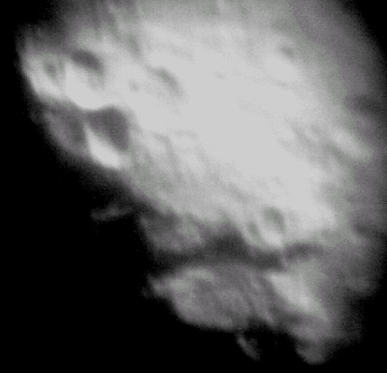
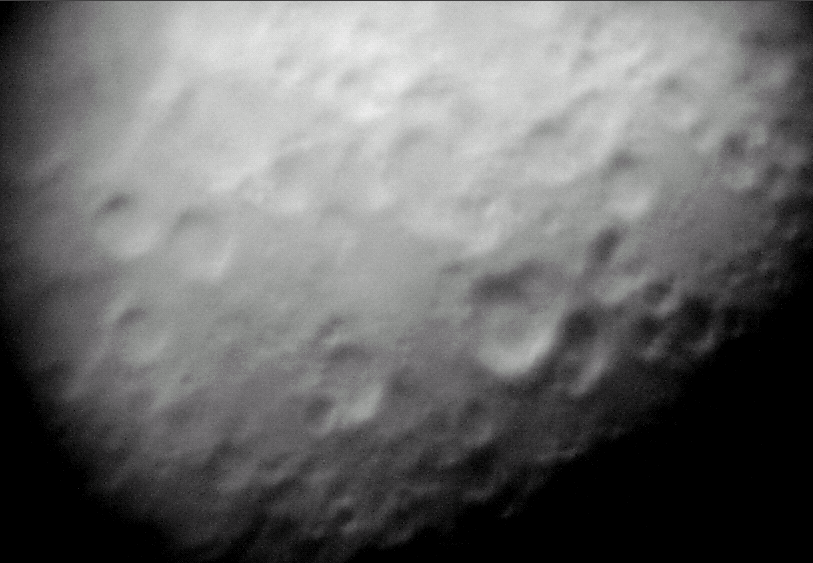
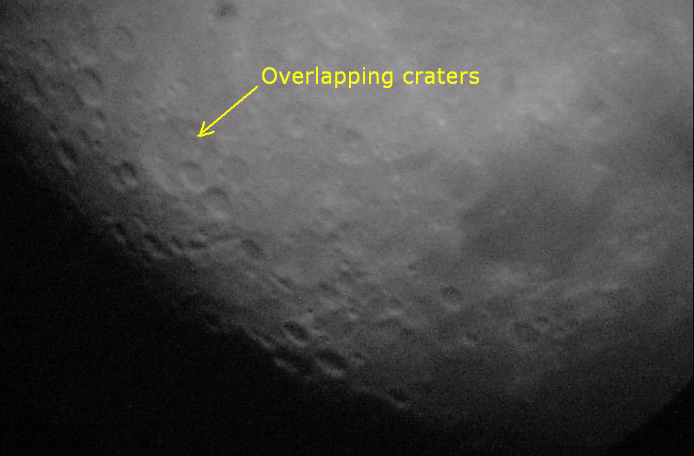
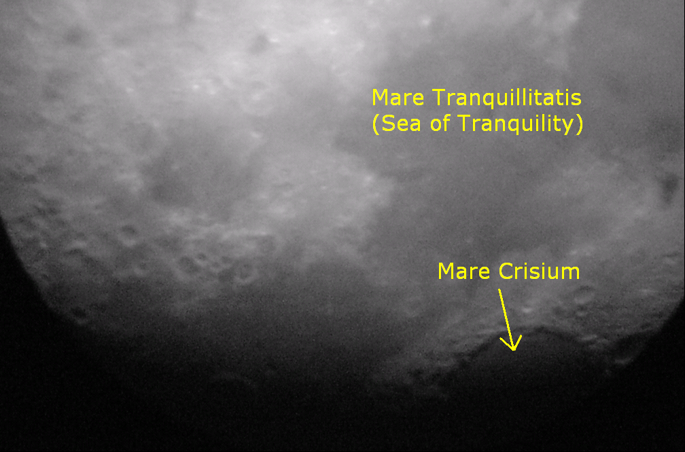
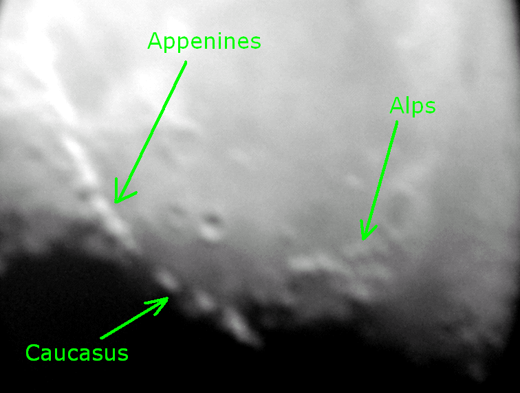
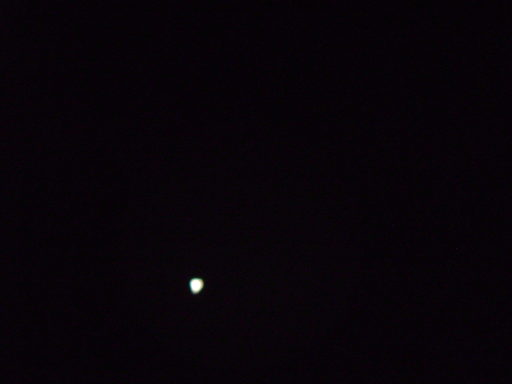

Afocal Astrophotography
To the uninitiated, nothing could be more logical than afocal photography: if you look through a telescope's eyepiece, why wouldn't you point a camera into it? And before single-lens reflex cameras became popular in the 1960s, that's what most of us did when we wanted pictures of the Moon and, for the very adventurous among us, planets. The problem was, we were shooting almost blindly. A host of subtle optical issues made it difficult to know how a picture was focused and framed until after the film was developed. Today these issues are all moot; you can see exactly how the image looks on a digital camera's viewing screen before pressing the shutter button. And, of course, there's instant feedback when the shutter closes. Don't like the result? Just delete the image; there's no wasting film (or money).
Afocal astrophotography using digital cameras can be very interesting and rewarding. The process involves holding up the lens of the digital camera to the eyepiece and shooting it. You have to hold it at such an angle that the brightness of the moon does not drown out the details. It is best to use Black and white mode , and an ISO rating of 400. More, and the image will be too bright, less and the image will not have good detail. Further editing with Photoshop etc. is also easy since they are already in digital form.
You can view any of the images in this article in proper size by right clicking and choosing 'view image'.
The Moon
The moon is the easiest and best target for astrophotography.Contrary to popular belief, the Moon should ideally not be viewed at its full phase, as at that time it is the brightest and glaring to the eye (or camera ). At around half phase or so it is the best because at that time the craters and ridges along the middle part are thrown into sharp relief.
The line dividing the lit and unlit portions of the moon is called the terminator. At these places, the Sun shines at extremely shallow angles, thus making features such as impact craters and basins stand out. The picture to the left is a good example.
Craters and Craters
The Moon's surface shows obvious evidence of having been affected by impact cratering. Impact craters form when asteroids and comets collide with the lunar surface, and globally about half a million craters with diameters greater than 1 km can be found. The lack of an atmosphere, weather and recent geological processes ensures that many of these craters have remained relatively well preserved in comparison to those found on Earth.
Craters are the most obvious, and indeed beautiful things we can observe on the moon through the telescope. There are craters the size of football fields, there are craters the size of cities and medium sized countries. There are craters inside craters, craters overlapping craters, craters obliterating other craters.
Ray craters are those which show a ray system that seems to radiate 'rays' outward. These are relatively recent craters, meaning only a few hundred million years old. A ray system comprises the radial streaks of fine ejecta thrown out during the formation of an impact crater. Ray ejecta material have different reflectivities (i.e., albedo), compositions, or thermal properties than the surface on which it is deposited, so that the rays form visible and, in some cases, infrared patterns. The resulting rays can extend for several multiples of the impact crater's diameter. Rays are often accompanied by small secondary craters formed by larger chunks of ejecta.
Among the lunar craters on the near side with pronounced ray systems are Aristarchus, Copernicus, Kepler, Proclus, and Tycho.
The Tycho crater is surrounded by a distinctive ray system forming long spokes that reach as long as
1,500 kilometers. It is the centre of a large ray system.

Lunar Mares, impact basins and highlands
The dark and relatively featureless lunar plains humans can clearly see when the Moon is full are called maria , Latin for seas, since they were believed by ancient astronomers to be filled with water. These are now known to be vast solidified pools of ancient basaltic lava.
The lighter-colored regions of the Moon are called terrae, or more commonly just highlands, since they are higher than most maria. Several prominent mountain ranges on the near side are found along the periphery of the giant impact basins, many of which have been filled by mare basalt.
The largest craters of all form 'impact basins'. These craters were formed during the early period of geological evolution of the moon and were later filled with basaltic lava, which is why they are still called 'mares'. Prominent impact basins on the near side include Imbrium, Serenitatis, Crisium, and Nectaris.
There are also mountain ranges on the moon, with the highest peaks higher than Mount Everest on Earth. These are, curiously named after mountain ranges on Earth, such as the lunar Alps, Apennines, Caucasus. They are located mostly in the central region and can be best seen at half moon time.

Planets
Planets, though bright, shough little detail when taken by afocal technique. This is because the exposure is for short duration. Thus it would not be possible to see the moons of Jupiter, or the rings of Saturn in the image ( although it would be visible through the telescope). Remember that our eyes are much more sensitive than cameras unless they are kept for prolonged exposures.
Picture to the right shows Jupiter. Note, no moons are visible.
It is not possible to take pictures of star clusters, nebulae etc. through digital camera afocally. Prolonged exposures are needed and the object must be tracked, requiring an equatorial mount.
What can go wrong
Pretty much everything. This isn't a very easy hobby, and it can take several
hours to get good images. But there's the beauty of the thing, bad pics don't
cost you any money. You can just get rid of them.
For best pictures, use black and white mode. Experiment with the camera settings especially ISO rating. Do not use optical zoom, as that reduces the sharpness of the image. Keep experimenting with different eyepieces till you get it right.
Telescope: 6'' Dobsonian
Camera: Sony DSC-S650 (a consumer digital camera, cost abt Rs. 9000)